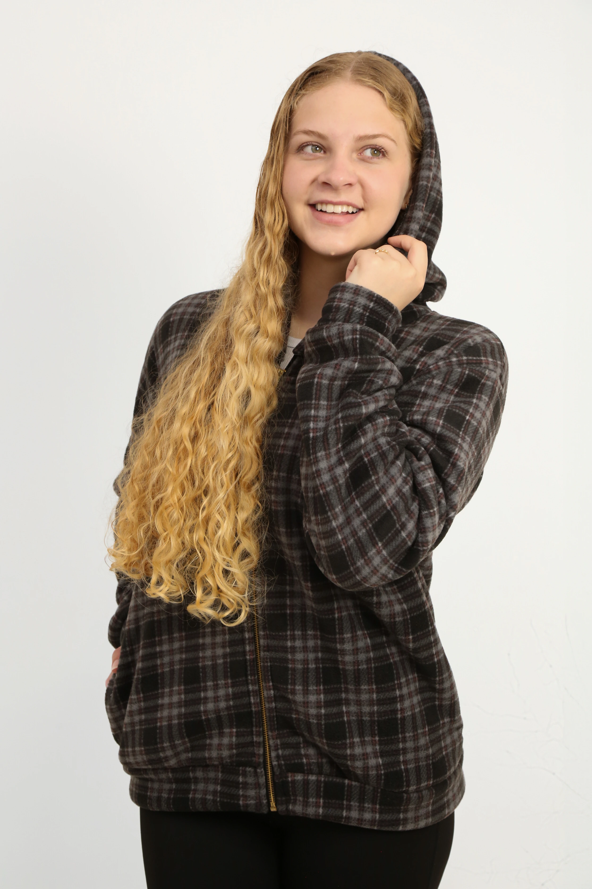
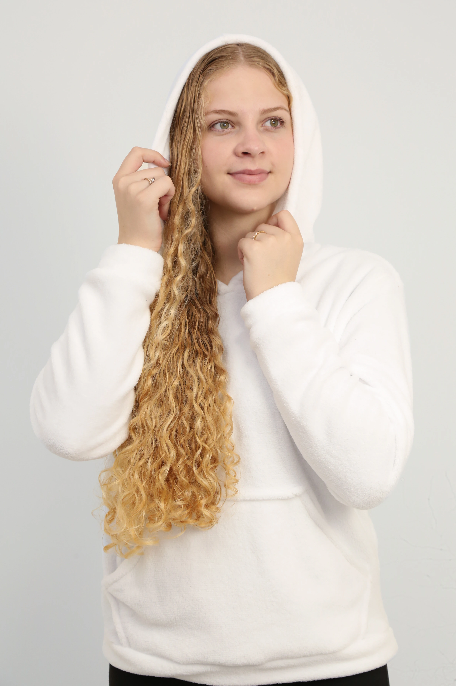
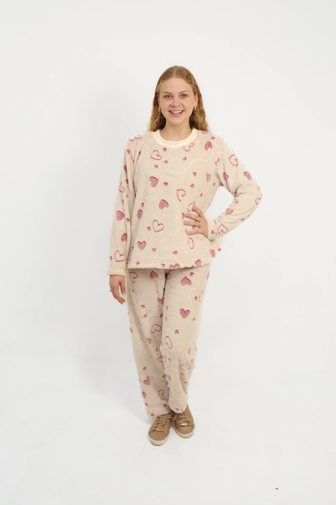
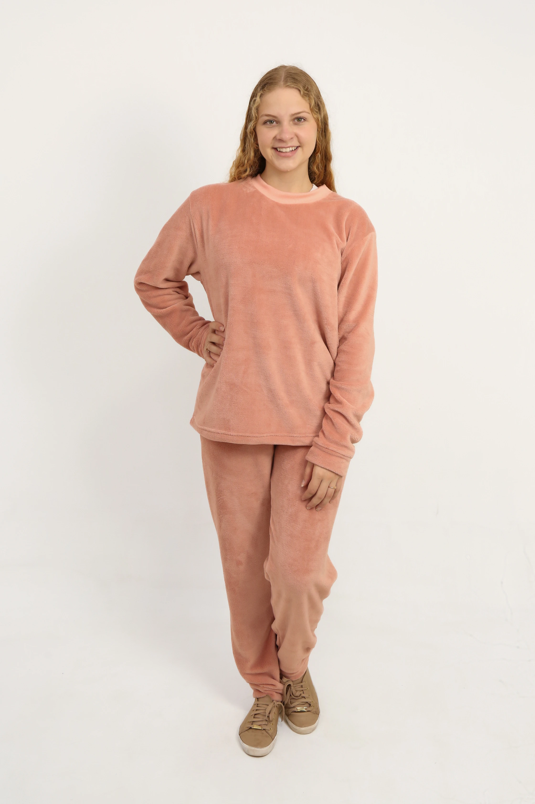
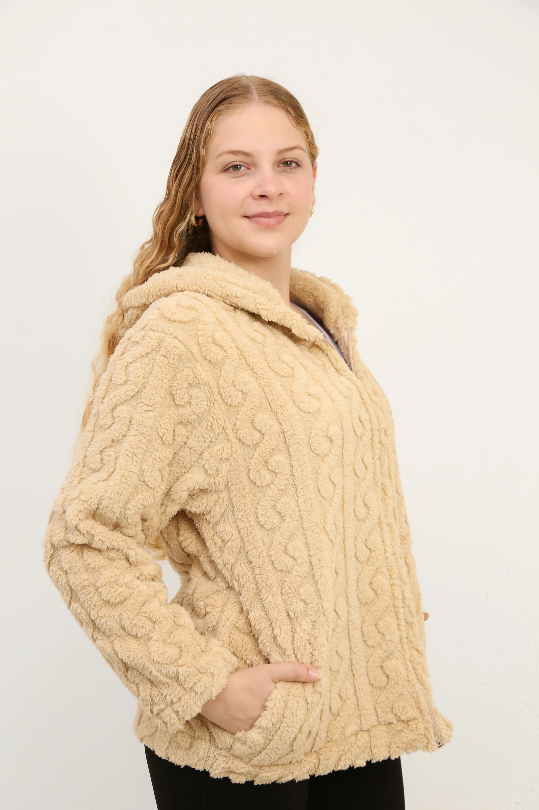
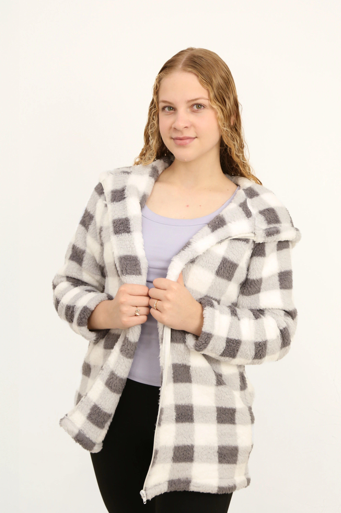
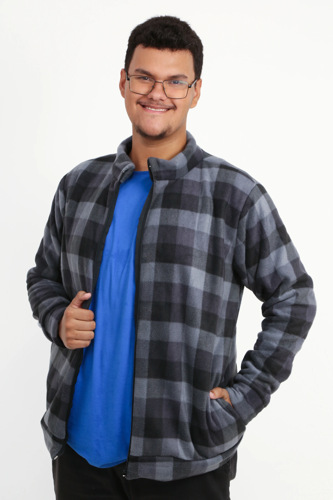
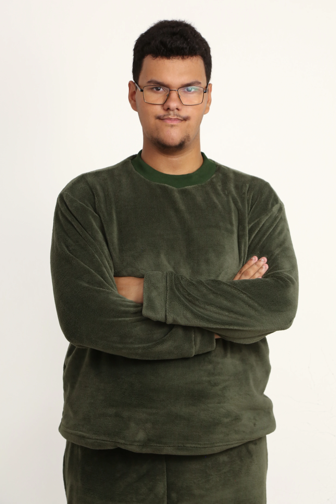
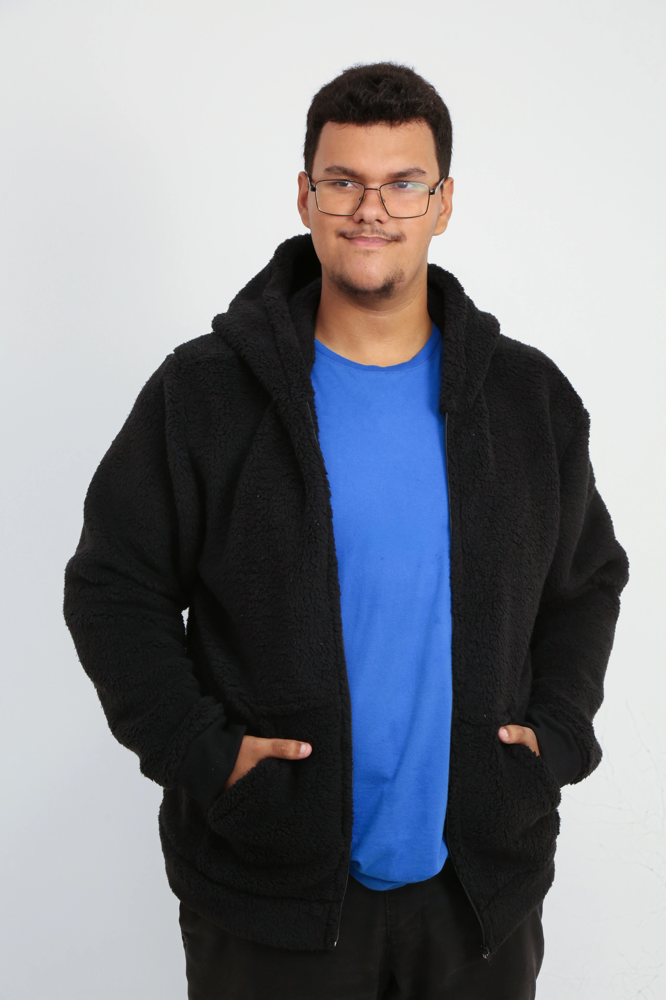

WEINE MALHAS
Weine Malhas
Moda em malhas produzida em Imbituva - Paraná
Sobre a Weine Malhas
Localizada em Imbituva, cidade reconhecida como um dos principais polos de malhas do Paraná, a Weine Malhas faz parte da tradição têxtil que tornou o município conhecido nacionalmente como "Cidade das Malhas".
A galeria abaixo apresenta exemplos de coleções, estilos e peças que representam a elegância, o conforto e a qualidade das malhas produzidas na região.
Coleção Feminina
Modelos modernos para diferentes ocasiões, combinando conforto e sofisticação.






Coleção Masculina
Peças versáteis para o dia a dia e para momentos especiais.


